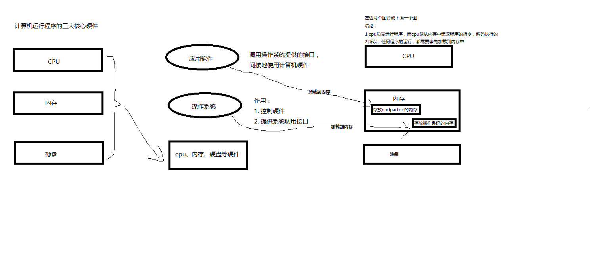
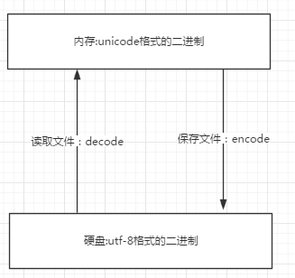
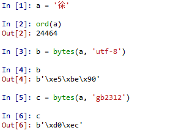
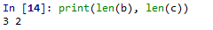
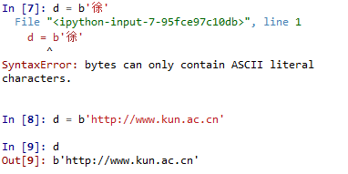
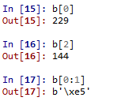
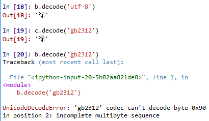

内存：速度快
硬盘：永久保存

打开编辑器就可以启动一个进程，是在内存中的，所以在编辑器编写的内容也都是存放在内存中的，断电后数据就丢失了。因而需要保存在硬盘上，点击保存按钮或快捷键，就把内存中的数据保存到了硬盘上。在这一点上，我们编写的py文件（没有执行时），跟编写的其他文件没有什么区别，都只是编写一堆字符而已。
第一阶段：python解释器启动，此时就相当于启动了一个文本编辑器
第二阶段：python解释器相当于文本编辑器，去打开test.py，从硬盘上将test.py的文件内容读入到内存中
第三阶段：python解释器执行刚刚加载到内存中的test.py的代码（在该阶段，即执行时，才会识别python的语法，执行到字符串时，会开辟内存空间存放字符串）
总结：python解释器与文本编辑器的异同
相同点：python解释器是解释执行文件内容的，因而python解释器具备读py文件的功能，这一点与文本编辑器一样
不同点：文本编辑器将文件内容读入内存后，是为了显示/编辑，而python解释器将文件内容读入内存后，是为了执行（识别python的语法）
计算机想要工作必须通电，高低电平（高电平即二进制数1，低电平即二进制数0），也就是说计算机只认识数字。那么让计算机如何读懂人类的字符呢?
这就必须经过一个过程：
字符---------（翻译过程）-------------数字
这个过程实际就是一个字符如何对应一个特定数字的标准，这个标准称之为字符编码。
1.一个python文件中的内容是由一堆字符组成的（python文件未执行时）
2.python中的数据类型字符串是由一串字符组成的（python文件执行时）
阶段一：现代计算机起源于美国，最早诞生也是基于英文考虑的ASCII
ASCII:一个Bytes代表一个字符（英文字符/键盘上的所有其他字符），1Bytes=8bit，8bit可以表示0-2**8-1种变化，即可以表示256个字符
ASCII最初只用了后七位，127个数字，已经完全能够代表键盘上所有的字符了（英文字符/键盘的所有其他字符）
后来为了将拉丁文也编码进了ASCII表，将最高位也占用了
阶段二:为了满足中文，中国人定制了GBK
GBK:2Bytes代表一个字符，为了满足其他国家，各个国家纷纷定制了自己的编码，日本把日文编到Shift_JIS里，韩国把韩文编到Euc-kr里
阶段三：各国有各国的标准，就会不可避免地出现冲突，结果就是，在多语言混合的文本中，显示出来会有乱码。
于是产生了unicode，统一用2Bytes代表一个字符，2**16-1=65535，可代表6万多个字符，因而兼容万国语言
但对于通篇都是英文的文本来说，这种编码方式无疑是多了一倍的存储空间（二进制最终都是以电或者磁的方式存储到存储介质中的）
于是产生了UTF-8，对英文字符只用1Bytes表示，对中文字符用3Bytes
需要强调的是：
unicode：简单粗暴，多有的字符都是2Bytes,优点是字符--数字的转换速度快；缺点是占用空间大。
utf-8:精准，可变长，优点是节省空间；缺点是转换速度慢，因为每次转换都需要计算出需要多长Bytes才能够准确表示。
1.内存中使用的编码是unicode，用空间换时间（程序都需要加载到内存才能运行，因而内存应该是越快越好）
2.硬盘中或网络传输用utf-8，保证数据传输的稳定性。
1 所有程序，最终都要加载到内存，程序保存到硬盘不同的国家用不同的编码格式，但是到内存中我们为了兼容万国（计算机可以运行任何国家的程序原因在于此），统一且固定使用unicode，
2 这就是为何内存固定用unicode的原因，你可能会说兼容万国我可以用utf－8啊，可以，完全可以正常工作，之所以不用肯定是unicode比utf－8更高效啊（uicode固定用2个字节编码
3 ，utf－8则需要计算），但是unicode更浪费空间，没错，这就是用空间换时间的一种做法，而存放到硬盘，或者网络传输，都需要把unicode转成utf－8，
4 因为数据的传输，追求的是稳定，高效，数据量越小数据传输就越靠谱，于是都转成utf－8格式的，而不是unicode。unicode------>encode(编码)-------->utf-8
utf-8---------->decode--------->unicode

文件从内存刷到硬盘的操作简称存文件
文件从硬盘读到内存的操作简称读文件
乱码：存文件时就已经乱码 或者 存文件时不乱码而读文件时乱码
总结：
无论是何种编辑器，要防止文件出现乱码（请一定注意，存放一段代码的文件也仅仅只是一个普通文件而已，此处指的是文件没有执行前，我们打开文件时出现的乱码）
核心法则就是，文件以什么编码保存的，就以什么编码方式打开
文件test.py以gbk格式保存，内容为：
x='林'
无论是
python2 test.py
还是
python3 test.py
都会报错（因为python2默认ascii，python3默认utf-8）
除非在文件开头指定#coding:gbk
python3 test.py 或 python2 test.py（执行test.py的第一步，一定是先将文件内容读入到内存中）
阶段一：启动python解释器
阶段二：python解释器此时就是一个文本编辑器，负责打开文件test.py,即从硬盘中读取test.py的内容到内存中
此时，python解释器会读取test.py 的第一行内容，#coding :utf-8,来决定以什么编码格式来读入内存，这一行就是来设定python解释器这个软件的编码使用的编码格式这个编码，python2默认使用ASCII，python3中默认使用utf-8
阶段三：读取已经加载到内存的代码（unicode编码的二进制），然后执行，执行过程中可能会开辟新的内存空间，比如x="egon"
内存的编码使用unicode，不代表内存中全都是unicode编码的二进制，
在程序执行之前，内存中确实都是unicode编码的二进制,比如从文件中读取了一行x="egon",其中的x，等号，引号，地位都一样，都是普通字符而已，都是以unicode编码的二进制形式存放与内存中的
但是程序在执行过程中，会申请内存（与程序代码所存在的内存是俩个空间），可以存放任意编码格式的数据，比如x="egon",会被python解释器识别为字符串，会申请内存空间来存放"hello"，然后让x指向该内存地址，此时新申请的该内存地址保存也是unicode编码的egon,如果代码换成x="egon".encode('utf-8'),那么新申请的内存空间里存放的就是utf-8编码的字符串egon了
在python2中有两种字符串类型str和unicode
在python2中，str就是编码后的结果bytes，所以在Python2中，unicode字符编码的结果就是str/bytes
#coding:utf-8
s='林' #在执行时,'林'会被以conding:utf-8的形式保存到新的内存空间中
print repr(s) #'\xe6\x9e\x97' 三个Bytes,证明确实是utf-8，16进制形式，转换为二进制为11100110 10011110 10010111
print type(s) #<type 'str'>
s.decode('utf-8') # '\u006796' 两个Bytes，证实为unicode，16进制形式，转换为二进制为1100111 10010111
# s.encode('utf-8') #报错，s为编码后的结果bytes，所以只能decode当python解释器执行到产生字符串的代码时（例如s=u'林'），会申请新的内存地址，然后将'林'以unicode的格式存放到新的内存空间中，所以s只能encode，不能decode
s=u'林'
print repr(s) #u'\u6797'
print type(s) #<type 'unicode'>
# s.decode('utf-8') #报错，s为unicode，所以只能encode
s.encode('utf-8')对于unicode格式的数据来说，无论怎么打印，都不会乱码
python3中的字符串与python2中的u'字符串'，都是unicode，所以无论如何打印都不会乱码
在python3中也有两种字符串类型str和bytes
str是unicode
#coding:utf-8
s='林' #当程序执行时，无需加u，'林'也会被以unicode形式保存新的内存空间中,
#s可以直接encode成任意编码格式
s.encode('utf-8')
s.encode('gbk')
print(type(s)) #<class 'str'>内存固定使用unicode编码，
我们可以控制的编码是往硬盘存放或者基于网络传输选择编码。
#unicode------>encode (utf-8)-------->bytes
拿到bytes，就可以往文件内存存放或者基于网络传输
#bytes------>decode (utf-8)-------->unicode
python3中的字符串encode得到bytes
python2中的字符串就是bytes
python2中的字符串前面加u，就是unicode
Bytes 对象是由单个字节作为基本元素（8位，取值范围 0-255）组成的序列，为不可变对象。
Bytes 对象只负责以二进制字节序列的形式记录所需记录的对象，至于该对象到底表示什么（比如到底是什么字符）则由相应的编码格式解码所决定。我们可以通过调用 bytes() 类（没错，它是类，不是函数）生成 bytes 实例，其值形式为 b'xxxxx'，其中 'xxxxx' 为一至多个转义的十六进制字符串（单个 x 的形式为：\xHH，其中 \x 为小写的十六进制转义字符，HH 为二位十六进制数）组成的序列，每个十六进制数代表一个字节（八位二进制数，取值范围 0-255），对于同一个字符串如果采用不同的编码方式生成 bytes 对象，就会形成不同的值：

比如上例中的 a 字符串对象，其十进制 unicode 值为 24464，分别使用 'utf-8' 和 'gb2312' 两种编码格式将其转换成 bytes 对象 b 和 c ，结果 b 和 c 的值是完全不同的，由于基于的编码格式不一致， b c 长度甚至都不相同，前者有 3 个字节长度，后者有 2 个字节长度：

另外，对于 ASCII 字符串，可以直接使用 b'xxxx' 赋值创建 bytes 实例，但对于非 ASCII 编码的字符则不能通过这种方式创建 bytes 实例：

由于 bytes 是序列，因此我们可以通过索引或切片访问它的元素：

可以发现如果以单个索引的形式访问元素，其会直接返回单个字节的十进制整数，而以序列片段的形式访问时，则返回相应的十六进制字符序列。
对于 bytes 实例，如果需要还原成相应的字符串，则需要借助内置的解码函数 decode()，借助相应的编码格式解码为正常字符串对象，如果采用错误的编码格式解码，则有可能发生错误：
